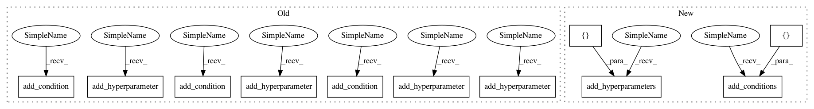

8565a366de87d82dc19c3386b4a83359be1aa275,autosklearn/pipeline/components/regression/libsvm_svr.py,LibSVM_SVR,get_hyperparameter_search_space,#Any#,101
Before Change
cs.add_hyperparameter(C)
cs.add_hyperparameter(kernel)
cs.add_hyperparameter(degree)
cs.add_hyperparameter(gamma)
cs.add_hyperparameter(coef0)
cs.add_hyperparameter(shrinking)
cs.add_hyperparameter(tol)
cs.add_hyperparameter(max_iter)
cs.add_hyperparameter(epsilon)
degree_depends_on_kernel = InCondition(child=degree, parent=kernel,
values=("poly", "rbf", "sigmoid"))
gamma_depends_on_kernel = InCondition(child=gamma, parent=kernel,
values=("poly", "rbf"))
coef0_depends_on_kernel = InCondition(child=coef0, parent=kernel,
values=("poly", "sigmoid"))
cs.add_condition(degree_depends_on_kernel)
cs.add_condition(gamma_depends_on_kernel)
cs.add_condition(coef0_depends_on_kernel)
return cs
After Change
epsilon = UniformFloatHyperparameter(name="epsilon", lower=0.001,
upper=1, default=0.1, log=True)
cs = ConfigurationSpace()
cs.add_hyperparameters([C, kernel, degree, gamma, coef0, shrinking,
tol, max_iter, epsilon])
degree_depends_on_kernel = InCondition(child=degree, parent=kernel,
values=("poly", "rbf", "sigmoid"))
gamma_depends_on_kernel = InCondition(child=gamma, parent=kernel,
values=("poly", "rbf"))
coef0_depends_on_kernel = InCondition(child=coef0, parent=kernel,
values=("poly", "sigmoid"))
cs.add_conditions([degree_depends_on_kernel, gamma_depends_on_kernel,
coef0_depends_on_kernel])
return cs
In pattern: SUPERPATTERN
Frequency: 4
Non-data size: 11
Instances
Project Name: automl/auto-sklearn
Commit Name: 8565a366de87d82dc19c3386b4a83359be1aa275
Time: 2017-02-04
Author: feurerm@informatik.uni-freiburg.de
File Name: autosklearn/pipeline/components/regression/libsvm_svr.py
Class Name: LibSVM_SVR
Method Name: get_hyperparameter_search_space
Project Name: automl/auto-sklearn
Commit Name: 8565a366de87d82dc19c3386b4a83359be1aa275
Time: 2017-02-04
Author: feurerm@informatik.uni-freiburg.de
File Name: autosklearn/pipeline/components/feature_preprocessing/nystroem_sampler.py
Class Name: Nystroem
Method Name: get_hyperparameter_search_space
Project Name: automl/auto-sklearn
Commit Name: 8565a366de87d82dc19c3386b4a83359be1aa275
Time: 2017-02-04
Author: feurerm@informatik.uni-freiburg.de
File Name: autosklearn/pipeline/components/feature_preprocessing/kernel_pca.py
Class Name: KernelPCA
Method Name: get_hyperparameter_search_space
Project Name: automl/auto-sklearn
Commit Name: 8565a366de87d82dc19c3386b4a83359be1aa275
Time: 2017-02-04
Author: feurerm@informatik.uni-freiburg.de
File Name: autosklearn/pipeline/components/regression/libsvm_svr.py
Class Name: LibSVM_SVR
Method Name: get_hyperparameter_search_space
Project Name: automl/auto-sklearn
Commit Name: 8565a366de87d82dc19c3386b4a83359be1aa275
Time: 2017-02-04
Author: feurerm@informatik.uni-freiburg.de
File Name: autosklearn/pipeline/components/classification/sgd.py
Class Name: SGD
Method Name: get_hyperparameter_search_space